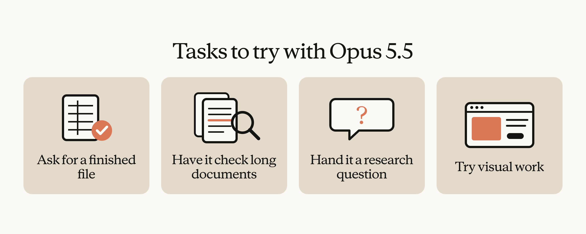
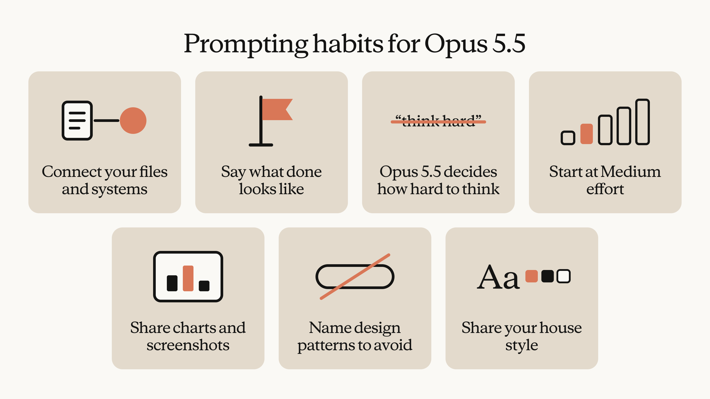

Opus 5.5는 Pro, Max, Ultra, Team 플랜의 Claude에서 기본 모델입니다. 다른 모델과 어떻게 비교되는지, 그리고 지식 업무에서 Opus 5.5를 최대한 활용하는 방법을 소개합니다.
목차
이제 Claude Opus 5.5가 Pro, Max, Ultra, Team 플랜의 Claude에서 기본 모델입니다. 저희는 Opus 5.5를 지식 업무의 일상 모델(daily driver)로 권장합니다. 즉, 리서치·분석·글쓰기를 하거나 메모, 보고서, 스프레드시트, 덱(deck)을 만들 때 Claude에서 계속 선택해 두는 모델이라는 뜻입니다.
여러분이나 팀이 일상 업무에는 Sonnet을 쓰고 Opus는 무거운 분석이나 복잡한 프로젝트용으로 아껴 왔다면, 다시 생각해 볼 만합니다. 더 유능한 모델은 더 적은 작업량으로 과제를 끝낼 수 있고, 그 덕분에 토큰당 더 높은 가격의 상당 부분을 상쇄할 수 있기 때문입니다.
현재 모델들을 비교하면 다음과 같습니다.
| 모델 | 이럴 때 쓰세요 | 백만 토큰당 가격 (입력 / 출력)* | 상대 속도 |
|---|---|---|---|
| Claude Haiku 5.5 | 속도가 가장 중요한 빠른 조회와 대량 작업 | $0.10 / $0.50 | 가장 빠름 |
| Claude Sonnet 5.5 | 빠르고 범위가 잘 정해진 작업, 그리고 명확한 브리프로부터 다듬어진 문서·슬라이드·스프레드시트 만들기 | $2 / $10 | 빠름 |
| Claude Opus 5.5 | 대부분의 지식 업무: 리서치, 분석, 그리고 판단력이 필요한 완성된 문서·덱·스프레드시트 | $4 / $20 | 보통 |
| Claude Fable 5.2 | 코딩, 재무, 과학 같은 분야에서 가장 야심 차고 열린(open-ended) 기술 작업 | $8 / $40 | 보통 |
*가격은 토큰 단위로 과금되는 사용량 기준입니다(모델 비교). Haiku 5.5의 가격은 100k 토큰 이하 프롬프트에 적용되며, 더 긴 프롬프트는 $0.50 / $2.50입니다. Pro, Max, Ultra, Team 플랜에서는 가격이 높은 모델일수록 사용 한도를 더 빨리 소진합니다. Pro 플랜과 Team 및 좌석 기반 Enterprise 플랜의 표준 좌석(standard seat)은 기간 한정 출시 혜택을 제외하면 한도에 Fable 5.2가 포함되지 않으므로, Fable 5.2는 사용량 크레딧(usage credits)으로 실행됩니다.
Haiku 5.5는 가장 빠르고 저렴한 모델로, 요약 작성이나 데이터 분류 같은 빠른 조회와 대량 작업을 위해 만들어졌습니다. 노력 수준(effort) 조절을 지원하는 첫 Haiku 모델이라서, 더 큰 모델로 바꾸기 전에 더 신중한 처리를 요청해 볼 수 있습니다. 짧고 범위가 좁은 작업에 가장 적합합니다. 더 긴 분석이라면 Opus 5.5로 바꾸세요.
Sonnet 5.5는 명확한 브리프가 있는 범위가 잘 정해진 작업에서 Opus 5.5보다 빠르고 저렴합니다. 예를 들어 이미 완성된 메모를 다듬어진 문서로 바꾸거나, 슬라이드 템플릿으로 덱을 만들어 달라고 요청하는 경우입니다. 다만 더 높은 노력 수준 설정에서는 Sonnet 5.5의 작업당 비용이 Opus 5.5에 가까워집니다. 그러니 Sonnet을 Extra high나 Max 노력 수준까지 끌어올리고 있다면 Opus 5.5로 바꾸는 것을 고려하세요.
Opus 5.5는 리서치, 재무 분석, 완성된 문서·덱·스프레드시트 작성처럼 신중한 판단이 필요한 복잡한 작업을 위해 만들어졌습니다. 일상 지식 업무에 Opus 5.5를 권장하는 이유는 아래에서 자세히 설명합니다.
Fable 5.2는 가장 까다로운 추론과 장시간 실행되는 작업에 가장 적합합니다. 예를 들어 깊은 다단계 리서치나, 몇 시간 동안 실행되는 대규모 서브에이전트(subagent) 팀에 맡길 수 있는 코딩 작업입니다. 대부분의 지식 업무는 Opus 5.5로 시작하고, 프로젝트의 범위와 복잡도가 요구할 때 Fable 5.2로 옮겨 가세요. Fable 5.2는 모든 유료 플랜에서 쓸 수 있지만, 사용량을 어떻게 차감하는지는 플랜에 따라 다릅니다.
어떤 모델을 쓰든, Claude가 기대만큼 해내지 못했다면 모델을 올리기 전에 먼저 더 높은 노력 수준을 시도해 보세요. 필요한 맥락이 있었고, 분명히 애썼는데도 틀렸다면 그때 모델을 올리세요.
Opus 5.5는 지시를 정확히 따르고 범위를 벗어나지 않기 때문에, 만들어 내는 스프레드시트, 슬라이드, 문서는 손볼 곳이 거의 없는 경우가 많습니다. 수치와 출처도 신중하게 다룹니다. 한 내부 리서치 테스트에서 Opus 5.5는 웹의 저장된 스냅샷만 사용해 한 기업의 분기 실적 보고서를 작성했는데, 이 스냅샷에서는 해당 기업의 실적 발표 자료를 찾기가 어려웠습니다. 자동 채점기(grader)가 모든 수치와 인용문을 스냅샷 속 페이지와 대조했고, 단 하나의 수치나 인용문이라도 지어냈다면 보고서는 불합격 처리되는 조건이었습니다. 여러 노력 수준 설정에 걸쳐 18개 보고서 중 16개가 통과했습니다.
글도 이전 모델보다 명확합니다. Opus 5.5는 가장 중요한 정보를 먼저 쓰고, 전문 용어를 덜 쓰며, 여러분이 준 글쓰기 규칙을 따릅니다. 더 긴 작업에서는 무엇을 했고, 무엇을 발견했고, 여러분에게 무엇이 필요한지를 분명하게 말합니다. 그래서 작업 결과를 검토하기도 더 쉬운데, 저희는 이것을 실용적인 장점일 뿐 아니라 안전 측면의 장점으로도 봅니다.
Ramp의 스태프 소프트웨어 엔지니어 John Ruelas는 이렇게 말했습니다. “좋은 동료처럼 글을 쓰고, 우리의 글쓰기 규칙을 따릅니다. 설계 명세(design spec)가 아주 적은 수정만으로 바로 쓸 수 있게 나왔고, 우리 프롬프트 하나를 다시 써 줬을 때는 제 버전보다 그쪽이 더 마음에 들었습니다.”
재무 분석도 강점입니다. Opus 5.5는 빽빽한 공시 자료, 재무 모델, 차트를 정확하게 읽고, 프로젝트나 딜 전체에 걸쳐 맥락을 놓치지 않습니다. 또 다른 내부 테스트에서 Opus 5.5는 가상의 HR 소프트웨어 회사 두 곳의 합병안을 분석했습니다. Excel로 재무 모델을 만든 다음, 그 가격에서 이 딜이 타당한지를 다루는 경영진용 프레젠테이션으로 바꿨습니다. 같은 과제에서 Opus 5는 93분이 걸렸지만 Opus 5.5는 63분 만에, 절반의 비용으로 끝냈고, 모델은 더 꼼꼼했으며 프레젠테이션은 더 읽기 쉬웠습니다.
투자사 Walleye Capital에서 센트럴 에퀴티 퀀트 리서치 엔지니어링을 이끄는 Frank Corrao는 더 높은 노력 수준 설정에서 Opus 5.5가 “우리 지시문 속 분(minute) 인덱싱이 하나씩 어긋나 있다(off by one)는 걸 감지하고 바로잡았으며, 이 때문에 채점기에서 점수를 잃을 수 있다고 언급까지 했습니다. 그 판단이 맞았고, 우리가 테스트한 어떤 모델도 이전에는 이것을 잡아내고 조치하지 못했습니다”라고 말했습니다.
Opus 5.5는 비전(vision) 성능이 가장 뛰어난 Opus 모델입니다. 빽빽한 문서, 차트, 스크린샷, 다이어그램을 정확하게 읽기 때문에 문서에서 데이터를 뽑아내는 일에 믿고 맡길 수 있습니다. 가장 낮은 노력 수준 설정에서도, 빽빽한 차트에서 값을 읽어 내는 정확도가 가장 높은 설정의 Opus 5보다 높았습니다.
새 모델이 나올 때마다 Claude에 맡기는 일을 다시 시험해 보고, 이전 모델에 맞춰 생긴 프롬프트 습관을 버릴 이유가 생깁니다.
완성된 파일을 요청하세요. 스프레드시트나 문서가 필요하다면, 거기서부터 만들어 갈 개요가 아니라 스프레드시트나 문서 자체를 요청하세요. Opus 5.5는 대개 한 번에 요청에서 완성 파일까지 도달할 수 있습니다.
긴 문서 검토를 맡기세요. 긴 계획서, 보고서, 덱을 주고 실수와 불일치를 찾아 달라고 하세요. Opus 5.5는 덱 속 차트가 원본 데이터와 맞지 않는 경우처럼, 긴 문서에서 놓치기 쉬운 세부 사항을 잡아냅니다.
리서치 질문을 건네세요. 정해진 답이 없는 질문을 하고, 출처를 모으고, 긴 문서를 읽어 나가며, 발견한 내용을 메모·보고서·덱으로 정리하게 하세요.
시각 작업을 시도하세요. 비전 성능 향상은 디자인에도 이어지므로, 인터페이스 프로토타이핑, 웹사이트 제작, 개념 일러스트레이션에 써 보세요.

Claude를 업무 파일과 시스템에 연결하세요. 여러분의 업무에 맞는 결과물을 얻는 데 가장 유용한 단계 중 하나입니다. 커넥터(connector)를 통해 Claude가 파일과 시스템에 접근할 수 있으면, 여러분이 붙여 넣은 내용만 가지고 일하는 대신 작업에 필요한 것을 직접 가져올 수 있기 때문입니다. Team과 Enterprise 플랜에서는 오너(owner)가 커넥터를 켜야 구성원이 쓸 수 있습니다.
첫 메시지에서 ‘완료’가 어떤 모습인지 말하세요. Claude에게 지시를 하나씩 주는 대신, 목표와 완성된 결과물, 그리고 언제 멈추고 물어봐야 하는지를 설명하세요. Opus 5.5는 길고 여러 부분으로 된 작업을 Opus 5보다 더 잘 끝까지 이어 갑니다.
“열심히 생각해(think hard)”와 “신중하게 생각해(think carefully)”를 지우세요. Opus 5.5는 사고(thinking)가 항상 켜져 있고, 요청과 노력 수준에 따라 얼마나 생각할지 스스로 정합니다. 저희 테스트에서 이런 문장을 지우자 응답이 더 빨리 시작됐고, 품질이 뚜렷하게 떨어지지도 않았습니다.
Medium 노력 수준에서 시작하세요. Medium은 Opus 5.5의 기본값이며, 저희 코딩·지식 업무 평가에서 Medium의 Opus 5.5는 High의 Opus 5와 같거나 더 나았습니다. 더 높은 설정은 더 오래 생각하고 비용도 더 들지만 항상 더 나은 결과를 내지는 않으므로, Medium이 막힐 때 High로 올리세요. 설정을 바꾸려면 전송 버튼 옆의 모델 이름을 클릭하고 Effort를 선택하세요.
차트를 다시 타이핑하지 말고 첨부하세요. 차트의 숫자를 프롬프트에 옮겨 적지 말고 차트, 스크린샷, 다이어그램 자체를 공유하세요. 차트 값을 받아 적는 것처럼 이전 모델을 위해 만든 우회책은 더 이상 필요 없을 수 있습니다.
원하지 않는 스타일을 구체적으로 말하세요. 디자인 작업에서 “뻔한 느낌은 피해 줘” 같은 일반적인 지시는 한 기본 스타일을 다른 기본 스타일로 바꾸는 데 그치기 쉽습니다. 크림색 배경이나 알약 모양 버튼처럼 피해야 할 구체적인 패턴을 짚어 주는 편이 더 효과적입니다.
회사 고유의 스타일을 알려 주세요. 브랜드나 글쓰기 가이드라인을 요청에 붙여 넣거나, 기존 덱 중 가장 잘 만든 것들을 Claude에게 알려 주고(예: 커넥터로 접근할 수 있는 Google Drive 폴더) 거기에 맞춰 달라고 하세요. 딱 맞게 나오기까지 몇 번 주고받을 것을 예상하세요.

노력 수준에 관한 이 발견은 얼리 테스터들에게서도 똑같이 나타났습니다. Factory의 기술 스태프(Member of Technical Staff) Zimu Li는 이렇게 말했습니다. “Claude Opus 5.5는 저희가 medium 노력 수준을 기본값으로 쓸 첫 모델입니다. 저희 테스트에서 high 노력 수준의 Opus 5와 같은 성능을 내면서 출력 토큰은 20~25% 덜 썼습니다.”
데모에서 진행한 한 프로젝트로 지금까지의 내용이 실제로 어떻게 보이는지 살펴보겠습니다. 가상의 한 소매 기업에서 지난 1년간 매출 성장이 둔화됐고, 경영진은 그 이유에 대해 네 가지 가설을 갖고 있었습니다. 한 분석가에게는 매장별 매출 스프레드시트, 최근 경영진 오프사이트(off-site) 자료 PDF, 기타 파일이 든 폴더가 있었습니다. Medium 노력 수준의 Opus 5.5에 준 프롬프트는 대략 다음과 같았습니다.
올해 성장이 크게 둔화됐어. 경영진이 그 이유에 대해 몇 가지 가설을 갖고 있는데, [내 매니저의] 메모에 있어. 내가 가진 자료는 전부 업로드한 폴더에 있어. 네 가지 가설을 각각 데이터로 검증해서 어떤 게 맞는지 알려 줘.
(원문: Growth slowed a lot this year. Leadership has a couple of theories about why; they're in [my manager's] note. Everything I have is in the uploaded folder. Please test each of the four theories against the data and tell me which ones hold up.)이 프롬프트는 Claude에게 열심히 생각하라고 하지 않고, 어떤 가설을 확인하려면 어떤 파일을 봐야 하는지도 말하지 않습니다. 목표와 최종 결과물의 모습을 밝히고, 접근 방식은 Claude에게 맡깁니다.
Claude는 네 가설 중 어느 것도 데이터로 뒷받침되지 않는다는 것을 발견했습니다. 다만 그중 하나는 완전히 배제할 수 없었습니다. 그런 다음 아무도 제기하지 않았던 설명을 내놓았습니다. 새 매장들이 기존 매장과 너무 가까운 곳에 문을 열어 기존 매장의 매출을 빼앗고 있었다는 것입니다. 매장을 도시별로 나열했을 때는 이 패턴이 조금 불분명했지만, 새 매장과의 거리로 필터링하자 뚜렷하게 드러났습니다. Claude는 그 거리에 대한 매출 영향을 회귀 분석(regression)해 이 발견을 뒷받침했습니다.
다음으로 Claude는 이 분석을 텍스트와 함께 차트와 인터랙티브 요소를 담은 문서로 만들었습니다. 여기에는 새 매장과 기존 매장 사이의 거리에 따라 매출이 어떻게 달라지는지 보여 주는 슬라이더도 들어 있었습니다. 동료 한 명이 같은 시간에 이 문서를 검토했습니다.
이어서 매니저가 Claude에게 이 문서를 결론부터 시작하는 이사회용 슬라이드로 바꿔 달라고 요청했습니다. Claude를 쓰지 않는 동료를 위해, 문서는 Word, PDF, Google Docs로, 덱은 PowerPoint, PDF, Google Slides로 내보낼 수 있습니다.
질의응답(Q&A)을 포함한 프로젝트 전체를 보려면 Opus 5.5 for Work 세션을 온디맨드로 시청하세요.
리서치 메모, 차이 분석(variance analysis), 기존 문서로 만드는 덱처럼, 평소라면 여러 번의 요청으로 나눠서 했을 일을 하나 고르세요. Opus 5.5에 파일과 완성 결과물에 대한 설명을 한 메시지로 주고, 노력 수준은 Medium으로 둔 채, 다른 모델에서 늘 받던 결과와 비교해 보세요.